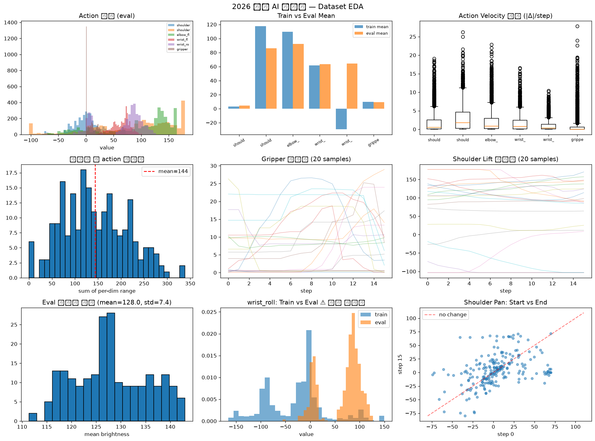
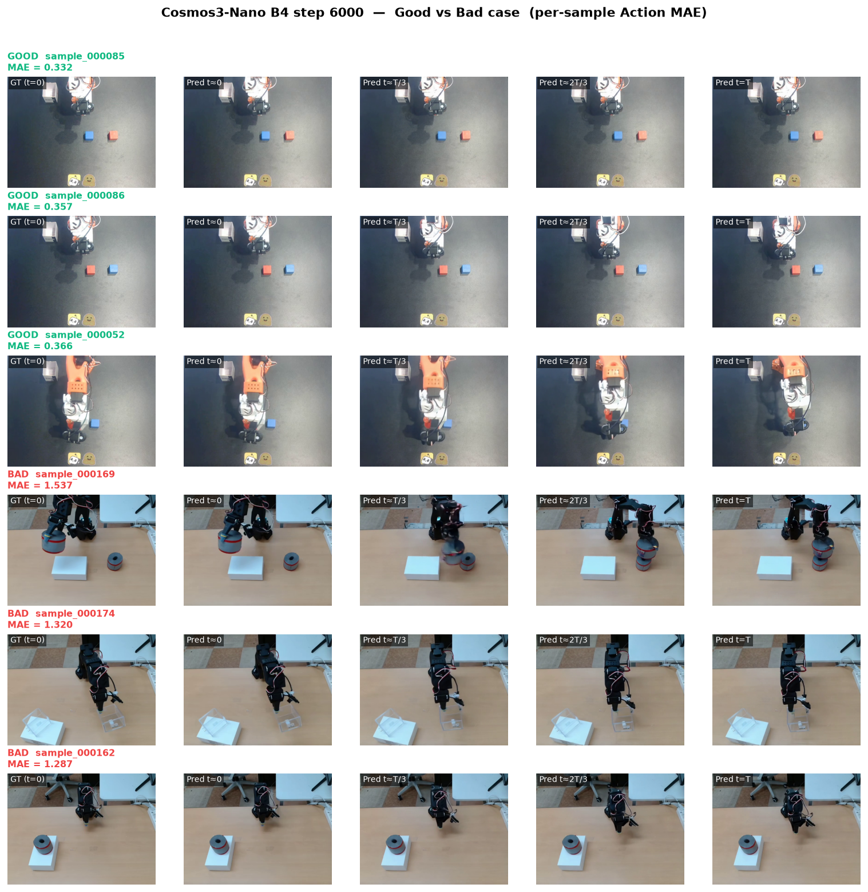
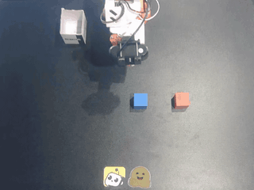
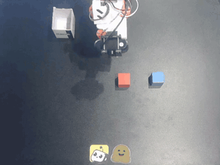
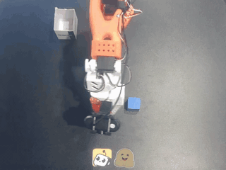

* 챌린지 데이터 예시 — SO-100 첫 프레임 6개(상단)와 15-step joint-angle 시퀀스(하단). 이 짝을 조건으로 15-frame 미래 롤아웃을 생성해야 한다.
VLA 경험에서 출발한 데이터 효율성 문제
앞선 RILS Lab 프로젝트에서 SO-101 시연 데이터를 직접 수집하고 VLA 정책을 학습하면서, 실제 로봇 데이터를 확보하는 데 드는 시간과 다양한 상태·행동을 충분히 포함시키는 일이 중요하다는 점을 경험했습니다. 이 경험을 바탕으로 World Model을 활용해 action-conditioned rollout을 생성하고, 로봇 학습에 활용할 수 있는 데이터를 확장하는 방향에 관심을 갖게 되었습니다.
이번 프로젝트에서는 별도의 SO-100 데이터셋으로 생성 영상을 만들고, 생성 결과를 직접 재생·비교해 모델이 어떤 행동 조건에서 안정적이거나 실패하는지 분석했습니다. 영상이 생성된다는 사실만으로 학습 데이터로서 유용하다고 볼 수 없으므로, action MAE와 Good/Bad rollout을 함께 살펴 데이터 선별 및 모델 튜닝의 단서를 찾았습니다.
01 · Problem & Data Analysis
2026 INHA AI Challenge(Dacon 236736)의 과제는 로봇의 초기 관측 프레임과 액션 시퀀스를 입력받아 이후 15개 프레임을 예측하는 것이었습니다. 따라서 일반적인 텍스트-비디오 생성과 달리, 생성된 영상이 초기 장면을 유지하면서 주어진 로봇 액션에 맞춰 변화해야 했습니다. 평가 점수는 0.3 × (1 − DINO cosine similarity) + 0.3 × (1 − VideoR3D cosine similarity) + 0.4 × Action MAE로 구성되며, 낮을수록 좋은 결과입니다.
평가 점수는 DINO 이미지 특징 유사도, VideoR3D 동영상 특징 유사도, Action MAE를 결합하며 낮을수록 좋습니다. 이 구조에서는 영상이 시각적으로 자연스러운지만으로는 충분하지 않고, 예측된 액션 값이 정답 액션과 얼마나 가까운지도 중요했습니다. 초기 분석에서 사전학습 모델의 액션 입력 분포와 대회 데이터의 절대 관절 각도 표현이 잘 맞지 않는 문제를 확인했습니다.

* 데이터 분석 결과입니다. 관절별 액션 값과 변화량, 속도, 그리퍼·어깨 관절의 궤적, 학습·평가 데이터의 분포 차이를 함께 비교했습니다. 이 분석을 바탕으로 액션 표현을 재설계하고 초기 프레임 정보를 보존하는 후처리를 검토했습니다.
02 · Baseline & Model Selection
기반 모델 후보를 고를 때는 생성 품질뿐 아니라 액션 조건을 모델 내부에 연결할 수 있는지, 학습 자원과 추론 시간이 과제 규모에 적합한지를 함께 고려했습니다. Cosmos-Predict3-Nano는 비교 대상인 DreamZero(Wan2.1-I2V-14B)보다 작은 8B급 백본을 사용하고, 액션과 영상 정보를 함께 다루는 구조여서 제한된 실험 자원 안에서 액션 조건부 예측을 검증하기에 적합하다고 판단했습니다.
학습·추론 경로와 모델 선택
동일한 A6000 Ada 환경에서 비교한 기록상 Cosmos3-Nano는 10k step 환산 학습 시간이 약 1.25시간이었고, DreamZero는 약 12시간이었습니다. DreamZero의 216개 샘플 추론은 33분 48초(샘플당 약 9.4초)가 소요됐습니다. Cosmos3-Nano는 latent 공간에서 액션과 영상 생성을 함께 처리하는 구조이며, DreamZero는 Wan2.1-I2V-14B 백본을 사용해 여러 chunk를 순차 생성하는 경로였습니다. 실험 예산과 전체 샘플 평가 시간을 함께 고려해 Cosmos3-Nano를 주 실험 모델로 선택하고, 이후에는 백본 교체보다 액션 입력 경로와 표현을 개선하는 데 집중했습니다.
03 · Action Conditioning
액션 정보가 모델 내부로 들어가는 경로 추가
기반 모델은 이미지와 텍스트 등 사전학습 모달리티를 처리할 수 있었지만, 이번 과제의 SO-100 6차원 액션 시퀀스를 동일한 방식으로 입력할 경로는 준비되어 있지 않았습니다. 따라서 액션 값을 단순히 프롬프트에 덧붙이는 대신, 액션 전용 투영층인 action_proj_in과 action_proj_out, 액션 모달리티 임베딩을 추가해 액션 특징이 영상 생성 과정에 전달되도록 구성했습니다.
새로 추가한 액션 입력 경로는 기본 학습률로 학습하고, 기존 백본은 LoRA 중심으로 조정했습니다. 이 단계에서 Action MAE가 초기 설정 대비 43.2% 감소했습니다. 다만 이 수치만으로 액션 입력이 미래 프레임에 의도한 움직임을 실제로 반영했다고 단정할 수는 없습니다. 현재 확인 가능한 근거는 액션 예측 오차의 감소와 생성 rollout의 정성적 비교이며, 동일한 초기 프레임에서 액션만 바꾸어 생성 결과가 어떻게 달라지는지 확인하는 통제 실험은 별도로 제시하지 않았습니다.
04 · Action Representation
절대 관절 각도에서 End-Effector Delta로
첫 번째 시도에서는 데이터에 포함된 관절 각도(joint angle)를 그대로 액션 조건으로 사용했습니다. 그러나 이 표현은 로봇의 현재 자세에 따라 값의 범위와 변화 의미가 달라지고, 사전학습 모델이 기대하는 액션 분포와도 맞지 않았습니다. 실제로 절대 관절 각도를 사용한 40k 학습 결과는 리더보드 0.300으로, 학습하지 않은 초기 모델의 0.268보다 나빠졌습니다. 단순히 액션 입력 경로를 추가하는 것만으로는 표현 공간의 차이를 해결할 수 없다는 점을 확인했습니다.
이에 관절별 절대 위치 대신 로봇 말단장치(end-effector)의 상대 이동량인 EE-Delta로 액션을 다시 표현했습니다. 그리퍼 값도 0~1 범위로 정규화해 이동량과 개폐 상태가 서로 다른 스케일로 입력되도록 구성했습니다. 이 표현으로 학습한 v5_base는 리더보드 0.2454를 기록했고, 절대 관절 각도 기반 결과보다 점수가 개선됐습니다. 별도 액션 평가에서도 Action MAE가 추가로 8.5% 감소했습니다.
이 결과는 모델 크기나 학습 횟수를 늘리는 것보다, 모델이 학습하기 쉬운 형태로 액션을 표현하는 것이 중요하다는 점을 보여줍니다.
05 · Temporal Anchoring
초기 관측 프레임 정보 보존
액션 조건에 맞춰 미래 프레임을 생성하더라도, 초기 관측에 포함된 로봇 팔과 주변 물체의 위치가 생성 과정에서 달라지면 예측 결과를 실제 상태의 연장선으로 해석하기 어렵습니다. 이를 줄이기 위해 생성된 영상에 초기 프레임 정보를 부드럽게 혼합하는 ANCHORED_soft 후처리를 적용했습니다. 최종 안전본에서는 원본 프레임과 생성 결과를 50:50으로 블렌딩했습니다.
이 단계의 효과는 과장하지 않았습니다. 기록된 v5_base 점수는 0.24540, ANCHORED_soft 적용 안전본은 0.24524로 차이는 0.00016입니다. 따라서 anchoring이 큰 폭의 성능 향상을 만들었다기보다, 초기 장면의 기준을 유지하면서 평가 점수를 소폭 개선한 보수적인 후처리로 보는 것이 정확합니다. 현재 기록에는 anchoring 미적용 시 발생한 특정 실패 장면을 정량 비교한 자료가 충분하지 않아, 초기 프레임 드리프트를 줄이려는 설계 가설과 확인된 점수 차이를 구분해 설명합니다.
06 · Fine-tuning & Optimization
LoRA로 학습 범위와 자원 사용 조정
8B급 백본 전체를 업데이트하는 방식은 실험에 필요한 GPU 메모리와 학습 시간이 커질 수 있어, attention 및 MLP projection에 rank 32 LoRA를 적용했습니다. 구체적으로 add_q/k/v_proj, to_add_out, gate/up/down_proj에 LoRA를 연결해 사전학습 가중치를 대부분 유지하면서 액션-영상 정렬에 필요한 파라미터를 학습했습니다.
학습 설정만큼 추론 환경도 병목이었습니다. Blackwell 환경에서 기존 PyTorch 2.6 + CUDA 12.4 조합은 해당 GPU 아키텍처 커널을 지원하지 않아 별도 환경을 구성했습니다. RTX PRO 6000 Blackwell 95GB에 맞춰 PyTorch nightly CUDA 13.0 환경을 만들었고, diffusion step 처리 시간은 약 11초에서 1.5초로 줄어 약 7배 빨라졌습니다.
학습 시간과 추론 시간은 비교 기준을 혼동하지 않도록 구분했습니다. 아래 DreamZero 비교표는 동일한 A6000 Ada 기준의 측정이며, Blackwell의 7배 개선은 별도 추론 환경 이관 결과입니다.
07 · Evaluation & Regression
Cosmos-Predict3-Nano를 SO-100 도메인에 맞춰 튜닝한 결과, 초기 모델 0.268에서 EE-Delta 기반 모델 0.2454로 개선했고, ANCHORED_soft 안전본은 0.24524, B4 sweep의 step 6000 체크포인트는 최종 0.2407을 기록했습니다. 점수는 낮을수록 우수하므로 최종 도전본은 초기 모델 대비 0.0273 낮아졌습니다.
초기 튜닝 단계의 10개 측정값에서는 Action MAE와 리더보드 점수 사이에 양의 상관(r=0.820)이 관찰됐습니다. 다만 이는 해당 실험 범위의 상관관계이며, Action MAE가 낮아지면 실제 로봇 행동을 반드시 더 정확하게 반영한다는 인과적 증거는 아닙니다. 따라서 정량 점수와 함께 샘플별 생성 영상을 확인하고, Good/Bad rollout에서 로봇 팔의 형상·물체 위치·후반부의 시각적 안정성이 어떻게 달라지는지 비교했습니다.
전체 215명 중 학부생 부문 11위로 마감.
체크포인트 선택과 회귀 검증
학습 손실이 가장 낮은 체크포인트가 대회 평가 점수까지 가장 낮게 만든다고 가정하지 않았습니다. B4 학습 과정에서 여러 step의 체크포인트를 추출해 실제 평가 점수를 비교했고, 그중 step 6000을 최종 도전본으로 선택했습니다. 이 선택으로 안전본 0.24524에서 0.2407로 점수가 낮아졌습니다. 따라서 최종 선택은 학습 loss만으로 결정한 것이 아니라, 대회 평가 지표를 기준으로 한 체크포인트 비교 결과입니다.
회귀 분석은 초기 튜닝 단계의 10개 측정값에서 Action MAE가 리더보드 점수와 함께 움직이는 경향을 확인하는 데 사용했습니다. 표본 수가 적고 특정 실험 범위에 한정된 분석이므로, 일반적인 성능 법칙이나 실제 로봇 행동의 정확성을 증명하는 결과로 확대 해석하지 않았습니다.
Ablation — base → total (실측 리더보드)
| # | Method | LB (실측) | Δ vs base | 비고 |
|---|---|---|---|---|
| 1 | v1 baseline (Cosmos3-Nano) | 0.268 | — | 초기 학습 안한 그대로 제출 |
| 2 | + absolute joint 40k (실패) | 0.300 | +0.032 | action 표현 mismatch 확인 |
| 3 | + EE-Delta 재설계 (v5_base 40k, LoRA rank 32, Action Injection) | 0.2454 | −0.023 | 학습 축 최고 (재현 0.24540) |
| 4 | + ANCHORED_soft (안전본) | 0.24524 | −0.023 | 후처리 축 최고 (첫 프레임 anchor) |
| 5 | + B4 sweep step 6000 (도전본, checkpoint selection) | 0.2407 | −0.027 | 최종 최고 성능 |
* 실측 데이터 기반 회귀 분석 LB ≈ 0.2404 − 0.1511·vid_l2 + 0.0077·dino_l2 + 2.804·act_mae + 0.788·act_diff (n=10, R² = 0.993). act_mae 항이 사실상 단독 dominant였음을 정량 확인.
vs DreamZero — 학습·추론 시간 (같은 A6000 Ada 기준)
| 모델 | 학습 (10k step 환산) | 추론 (216 sample) | 비고 |
|---|---|---|---|
| DreamZero (LoRA) | ~ 12 h (실측 v2/v4/v5/v6 평균) | 33 m 48 s (~9.4 s / sample) | Wan2.1-I2V-14B backbone · Vizuara SO-101 LoRA zero-shot |
| Cosmos3-Nano (v5_base) | ~ 1.25 h (10k step 환산, 2.2 it/s) | Blackwell 이관 시 diffusion step 7× 가속 | step 당 ~9.6× 빠름 (0.45 s vs 4.32 s) |
* Cosmos3-Nano가 학습·추론 모두 압도적으로 빠른 이유는 (1) 8B 백본이 DreamZero의 14B보다 작고, (2) latent 공간에서 action-video joint diffusion으로 chunk 반복 없이 한 번에 예측, (3) FlashAttention · Blackwell nightly torch로 kernel 최적화. DreamZero는 chunk 방식(1 sample = 2 chunk × diffusion 8 step × 2회)이라 I/O·KV cache overhead가 더 큼.
Good / Bad case — per-sample Action MAE breakdown

* 도전본(B4 step 6000) 216 sample을 자체 채점 재실행 → per-sample MAE로 랭킹. GOOD 3개 (MAE 0.33~0.37)는 로봇 팔과 배경이 안정적으로 유지, BAD 3개 (MAE 1.29~1.54)는 후반부 로봇 팔 형상이 흐릿해지거나 물체 위치가 어긋남. Bad case는 대부분 이동 폭이 큰 gripper 또는 배경 물체 다수 상황에 편중.
Good case rollout (실제 재생)

낮은 Action MAE를 기록한 첫 번째 rollout입니다. 초기 프레임의 로봇 팔과 물체 위치가 예측 구간에서 비교적 안정적으로 유지되는 사례입니다.

두 번째 양호 사례입니다. 샘플별 액션 오차가 낮았으며, 생성된 프레임에서 로봇 팔의 움직임과 배경이 큰 흔들림 없이 이어집니다.

세 번째 양호 사례입니다. Action MAE 0.366을 기록했으며, 예측 구간에서 주요 물체와 로봇 팔의 상대적 배치가 유지되는 모습을 확인할 수 있습니다.
* Good case 3개 rollout을 원본 6 fps로 loop 재생. Cosmos3-Nano B4 step 6000 pred, 16 frame, 320px 다운스케일. 로봇 팔 궤적과 물체 위치가 부드럽게 유지되는 것을 확인할 수 있습니다.
- 실행 환경 — Ubuntu 22.04 · Slurm · PyTorch 2.6 (inha2026 env) + PyTorch 2.15 nightly cu130 (inha2026_bw, Blackwell 전용)
- Model — Cosmos-Predict3-Nano · Diffusers 0.39.0 · PEFT 0.20.0 · LoRA rank 32 (attn + MLP)
- Data — SO-100 로봇 15-frame 롤아웃 · Dacon 236736 · train/eval action 분포 편차 EDA 완료
한계와 후속 연구: Forward Dynamics의 활용 가능성
08 · Limitations & Future Work — Forward Dynamics
범위 구분: 아래 MPC·MCTS·Model-based RL 관련 내용은 이번 챌린지에서 구현·검증한 기능이 아니라, action-conditioned prediction이 향후 연결될 수 있는 활용 방향을 정리한 것입니다.
본 챌린지에서는 초기 프레임과 액션 시퀀스를 입력받아 미래 프레임을 예측하는 forward dynamics 문제를 다뤘습니다. 다만 생성 영상을 실제 정책 학습 데이터로 활용하거나, 시뮬레이터와 결합해 로봇 제어 성능을 검증하는 단계까지는 진행하지 않았습니다. 아래 내용은 구현 완료 항목이 아니라 후속 연구 방향입니다.
- Rollout-based planning — 로봇이 다음 행동을 결정할 때 후보 액션 궤적을 World Model로 미리 생성하고, 목표 도달 비용을 비교해 선택할 수 있습니다. 이 경우 forward dynamics는 MPC나 MCTS에서 미래 상태를 예측하는 시뮬레이터 역할을 합니다.
- 실행 전 안전 검증 — 실물 로봇이 조작을 시작하기 전에 outcome을 시뮬레이션해서 위험한 후보(예: 물체 낙하, 자기 충돌)를 사전에 걸러낼 수 있습니다. 특히 재시도 비용이 큰 실기 환경에서 유용할 수 있습니다.
- Model-based RL의 기반 — 정확한 forward dynamics가 있으면 실환경 interaction 없이 policy를 개선할 수 있다 (Dyna-style). data-efficient RL과 offline RL 파이프라인의 핵심 인프라가 될 수 있습니다.
- Cosmos3처럼 대형 VLM에 action modality를 얹은 world model은 이 방향의 zero-shot 커버리지 상한과 도메인 재훈련 경계선을 실측할 대상. 본 챌린지 결과가 그 경계를 부분적으로 확인함 — Action Injection + EE-Delta 재설계 + LoRA rank 32까지가 216 sample scale에서 zero-shot에 가까운 커버리지를 확보하는 최소 튜닝 조합이라는 empirical 데이터포인트.